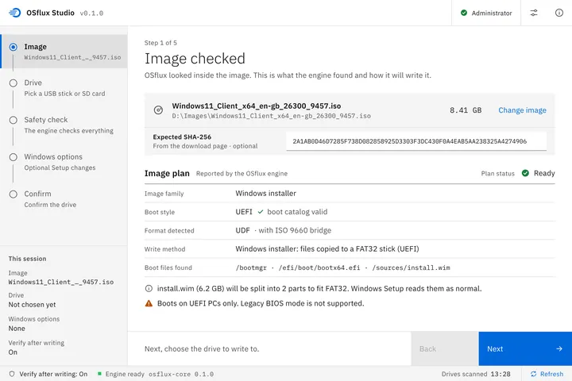
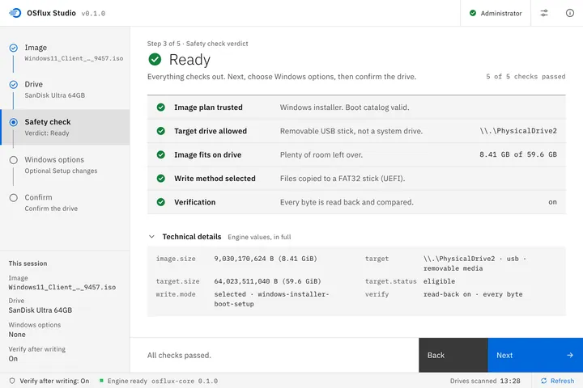

Open source · GPL-3.0-or-later
Bootable USB sticks for Windows and Linux, made safely.
OSflux writes a Windows 11 installer, a Linux ISO or a raw disk image to a USB stick or SD card. It refuses drives it shouldn’t erase, asks you to confirm the exact stick, and reads every byte back when it’s done.
Writing works on Windows only for now. Today OSflux is a command-line program; OSflux Studio, the desktop app, is being built on the same engine.
Design preview
OSflux Studio
The desktop app in progress. These are frames from its design, in your system’s light or dark theme, not screenshots of a released version.


Features
What OSflux does today
-
01
Safe by default
Only removable drives such as USB sticks and SD cards can be written. The system drive and external hard disks and SSDs are refused. You confirm with the drive’s four-character code, or the full phrase if it has files on it, and the confirmation expires after 10 minutes.
-
02
Windows 11 ISOs
The installer is copied onto a FAT32 stick that starts in UEFI mode, with Secure Boot intact. An
install.wimover 4 GB is split into parts automatically, the same formDISMmakes, with nothing extracted to a temporary folder. -
03
Windows Setup options
Off unless you choose them: skip the TPM 2.0 and Secure Boot checks, use a local account instead of a Microsoft account, skip the privacy questions, and stop automatic BitLocker encryption. No password is ever stored on the stick.
-
04
Every byte checked
After writing, OSflux reads every byte back and compares it, so a faulty or fake-capacity stick is caught. It also prints the image’s SHA-256 to compare with the one the publisher lists.
-
05
Linux ISOs and disk images
Hybrid Linux ISOs, such as Ubuntu, Fedora, Debian, Arch and Mint, and raw
.imgdisk images are copied to the stick byte for byte. -
Platform
Windows only, for now
Writing drives works on Windows today, from an Administrator prompt. Linux and macOS drive access is planned: OSflux builds and is tested on Linux, but can’t write drives there yet.
Safety check
How OSflux avoids erasing the wrong drive
Writing a stick erases it, so every write goes through the same chain of checks. The engine makes every decision; the app and the command line only ask it.
-
Only removable drives are offered
OSflux lists your drives and refuses the one Windows runs from, external hard disks and SSDs, and any drive whose size or identity it can’t read.
-
The image and the drive are checked together
An image that doesn’t fit, or one OSflux can’t make sense of, is stopped before you’re asked to confirm anything.
-
You confirm that exact stick
An empty stick is confirmed with its four-character drive code. A stick with files on it needs the full phrase, such as
OSFLUX ERASE TARGET 2 7F3A. The code comes from the drive’s model, serial number and device ID, so a swapped stick won’t match. -
The confirmation runs out
It covers one write of the same image within 10 minutes. Just before writing, OSflux checks the drive again and stops if anything has changed.
-
Written, read back and recorded
OSflux writes the stick, reads every byte back, and records each attempt in an audit log on your PC. If it can’t record that a write is starting, it doesn’t touch the drive.
Open source
Free software, built in the open
OSflux is licensed under the GNU General Public License, version 3 or later (GPL-3.0-or-later). The OSflux Studio program is distributed under GPL-3.0 only, because it uses Slint under the GPL-3.0.
Made by HOD Technologies Limited. The OSflux name and logo are not covered by the licence.
Contribute
OSflux is written in Rust. Every change is checked on Windows and Linux. Bug reports, tests on real hardware and code are all welcome.